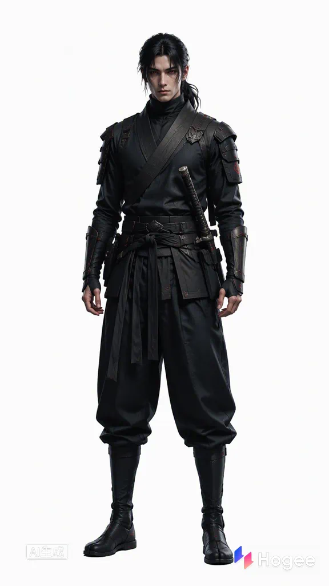

H
Hogee
AI 短剧工坊 · 逆命木叶
AI 短剧工坊 · 逆命木叶
◆ 940
赵
集：第1集 · 异世囚笼 ▾
总片段数：3 ｜ 总时长：00:37
模型 S 2.0-fast ▾
🎨 赛博朋克电影 ▾
9:16 ▾
720p ▾
资产库 ＋
角色 2
林晚-默认形象

宇智波鼬-默认形象
场景 1

木叶长廊-月夜
道具 0
暂无道具
素材 0
暂无素材
片段时长请限制在 4-15s，输入 @ 可快速调整镜头时长、引用角色、场景、素材
片段 1
已生成 420 / 9000排队中…
▶
当前片段视频尚未生成点击左上「生成」开始创建
00:00 / 00:13
9:16 · 480P片段 1 · 真实生成结果
🎙 音画同出 · 音轨 生成配音
00:00 / 00:37